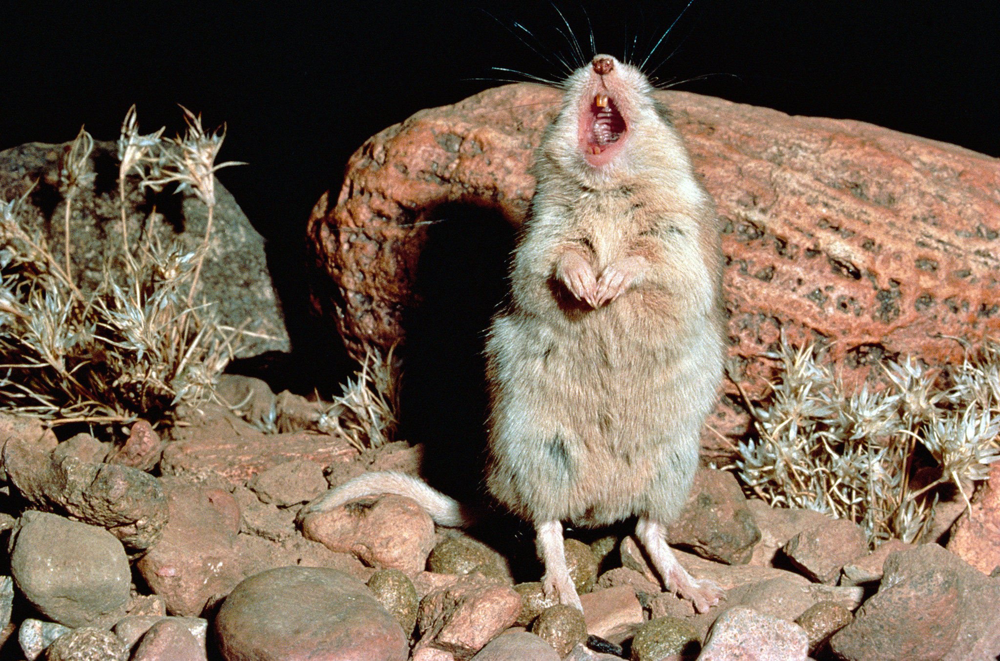

Волчий хомяк
Весят эти зверьки около 50 граммов (то есть не больше отборного яйца), имеют непривычно длинный хвост и внешне больше напоминают мышь, чем хомячка. По-английски их так и называют: grasshopper mice — «кузнечиковые мыши»; а название рода Onychomys просиходит от греческих слов ὄνυξ ‘ноготь’ и μῦς ‘мышь’. Но если обычные мыши в основном кормятся семенами и зелеными частями растений, то в рационе кузнечикового хомячка растительная пища занимает лишь малую часть, тогда как всё остальное — это насекомые, паукообразные и различные позвоночные, от мелких лягушек и ящериц до других грызунов. Стоит отметить, что евразийские хомячки иногда тоже не прочь закусить животной пищей, но доля растительных кормов в их рационе всё-таки выше.